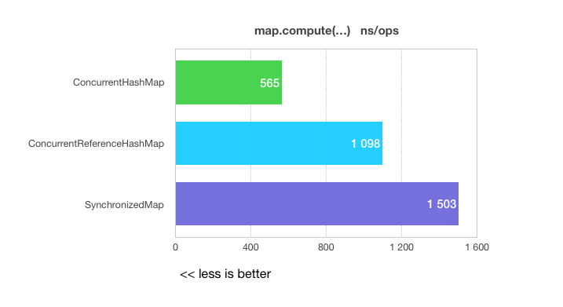

1. Intro
Sometimes we need to synchronize some blocks of a code by the value of variable.
In order to understand this problem, we will consider a simple banking application which makes the following operations on the each transfer of money by the client:
-
evaluates the amount of the cash-back by this transfer from external web service (CashBackService)
-
performs transaction of a money transfer in the database (AccountService)
-
updates the data in the cash-back evaluation system (CashBackService)
The base components of the application are shown in the next diagram:
I tried to make an example as clear as possible. The transfer of money in the payment service depends on the other two services:
-
The first one is a CashBackService that interacts with another (external) web application under the REST protocol. And in order to calculate the actual cash-back, we need to synchronize transactions with this application. Because the next amount of the cash-back may depend on the total amount of user payments.
-
The second is an AccountService that communicates with an internal DataBase and store a data relate to accounts of users. In this service, we can use a JPA transaction to making some actions as atomic operations in the DataBase.
In a real life, I’d strongly recommend to make a refactoring in such systems to avoid this situation as it possible. But in our example, imagine that we have no choice.
Let’s look at the draft code of this application:
@Service
public class PaymentService {
@Autowired
private ExternalCashBackService externalCashBackService;
@Autowired
private AccountService accountService;
public void withdrawMoney(UUID userId, int amountOfMoney) {
synchronized (userId) { (4)
Result result = externalCashBackService.evaluateCashBack(userId, amountOfMoney); (1)
accountService.transfer(userId, amountOfMoney + result.getCashBackAmount()); (2)
externalCashBackService.cashBackComplete(userId, result.getCashBackAmount()); (3)
}
}
}
@Service
public class ExternalCashBackService {
@Autowired
private RestTemplate restTemplate;
public Result evaluateCashBack(UUID userId, int amountOfMoney) {
return sendRestRequest("evaluate", userId, amountOfMoney);
}
public Result cashBackComplete(UUID userId, int cashBackAmount) {
return sendRestRequest("complete", userId, cashBackAmount);
}
private Result sendRestRequest(String action, UUID userId, int value) {
URI externalCashBackSystemUrl = URI.create("http://cash-back-system.org/api/" + action); (5)
HttpHeaders headers = new HttpHeaders();
headers.set("Accept", MediaType.APPLICATION_JSON_VALUE);
RequestDto requestDto = new RequestDto(userId, value);
HttpEntity<?> request = new HttpEntity<>(requestDto, headers);
ResponseDto responseDto = restTemplate.exchange(externalCashBackSystemUrl,
HttpMethod.GET,
request,
ResponseDto.class)
.getBody(); (6)
return new Result(responseDto.getStatus(), responseDto.getValue());
}
}
@Service
public class AccountService {
@Autowired
private AccountRepository accountRepository;
@Transactional(isolation = REPEATABLE_READ) (7)
public void transfer(UUID userId, int amountOfMoney) {
Account account = accountRepository.getOne(userId);
account.setBalance(account.getBalance() - amountOfMoney);
accountRepository.save(account);
}
}| 1 | evaluates the amount of the cash-back by the transaction in an external web service |
| 2 | performs transaction of a money transfer in the database |
| 3 | updates the data in the cash-back evaluation system |
| 4 | synchronization on the instance of UUID |
| 5 | URL of the external cash-back system |
| 6 | sends a request to the external system by REST API. |
| 7 | AccountService persists a data about the money transfer in the DataBase transaction. |
However, you can have several objects with the same value (userId - in the example), but the synchronization works on the instance of the object and not on its value.
The code below does not work well, because it’s incorrectly synchronized,
the static factory method UUID.fromString(..) make a new instance of UUID class on each call,
even if you pass there an equal string argument.
So, we get different instances of the UUID for equal keys.
If we run this code from multiple threads then we have a good chance to get a problem with synchronization:
public void threadA() {
paymentService.withdrawMoney(UUID.fromString("11111111-2222-3333-4444-555555555555"), 1000);
}
public void threadB() {
paymentService.withdrawMoney(UUID.fromString("11111111-2222-3333-4444-555555555555"), 5000);
}In this case, you need to obtain the same reference for equals objects to synchronize on it.
2. Wrong ways to solve this issue
2.1. Synchronized methods
You can move the synchronized on a method:
public synchronized void withdrawMoney(UUID userId, int amountOfMoney) {
..
}This solution has a bad performance. You will block transfers of money for absolutely all users. And if you need to synchronize different operations in the different classes by the same key this solution not helps you at all.
2.2. String intern
In order to ensure that the instance of the class (which contain a user ID)
will be the same in all synchronized blocks,
we can serialize it into a String and use the String.intern() to obtain the same link for equals strings.
String.intern uses a global pool to store strings which are interned.
And when you request intern on the string, you get a reference from this pool if such string exists there
or else this string puts in the pool.
You can find more details about String.intern in
The Java Language Specification - 3.10.5 String Literals
or in the Oracle Java documentation about the String.intern
public void withdrawMoney(UUID userId, int amountOfMoney) {
synchronized (userId.toString().intern()) {
..
}
}Using the intern is not good practice, because the pool of Strings is difficult to clean with the GC. And your application can consume too many resources while the active use of the String.intern.
Also, there is a chance that a foreign code synchronized on the same instance of the string as your application. This can lead to deadlocks.
| In general, the use of intern is better left to the internal libraries of the JDK, there are good articles by Aleksey Shipilev about this point. |
3. How can we solve this problem correctly?
3.1. Create your own synchronization primitive
We need to implement a behavior that describes on the next diagram:
At the first we need to make a new synchronization primitive - the custom mutex. That will work by the value of the variable, and not by the reference to the object.
It will be something like a "named mutex", but a little wider, with the ability to use the value of any objects for identification, not just the value of a String. You can find examples of synchronization primitives to locking by the name, in other languages (C++, C#). Now, we will solve this issue in Java.
Something like this:
public void withdrawMoney(UUID userId, int amountOfMoney) {
synchronized (XMutex.of(userId)) {
..
}
}In order to ensure that the same mutexes are obtained for equal values of variables, we will make the mutex factory.
public void withdrawMoney(UUID userId, int amountOfMoney) {
synchronized (XMutexFactory.get(userId)) {
..
}
}
public void purchase(UUID userId, int amountOfMoney, VendorDescription vendor) {
synchronized (XMutexFactory.get(userId)) {
..
}
}In order to return the same instance of mutex on the each of requests with equal keys,
we will need to store the created mutexes.
If we will store these mutexes in the simple HashMap,
then the size of the map will increase as new keys appear.
And we don’t have a tool to evaluate a time when a mutex not used anywhere.
In this case, we can use the WeakReference to save a reference to the mutex in the map, just when it uses.
In order to implement this behavior, we can use the WeakHashMap data structure.
I wrote an article about this type of references a month ago, you can consider it in more details here:
Soft, Weak, Phantom references in Java
Our mutex factory will be based on the WeakHashMap.
The mutex factory creates a new mutex just
if the mutex for this value(key) is not found in the HashMap.
Then created mutex is added to the HashMap.
Using of the WeakHashMap allows us to store a mutex in the HashMap while existing any references to it.
And the mutex will be removed from a HashMap automatically when all references to it are released.
We need to use a synchronized version of WeakHashMap,
let’s see what’s described in the documentation about it:
This class is not synchronized. A synchronized WeakHashMap may be constructed using the Collections.synchronizedMap method.
It’s very sad and a little later we’ll take a closer look at the reason. But for now, let’s consider an example of implementation, which is proposed by the official documentation (I mean the use of Collections.synchronizedMap).
public final Map<XMutex<KeyT>, WeakReference<XMutex<KeyT>>> weakHashMap =
Collections.synchronizedMap(new WeakHashMap<XMutex<KeyT>, WeakReference<XMutex<KeyT>>>());
public XMutex<KeyT> getMutex(KeyT key) {
validateKey(key);
return getExist(key)
.orElseGet(() -> saveNewReference(key));
}
private Optional<XMutex<KeyT>> getExist(KeyT key) {
return Optional.ofNullable(weakHashMap.get(XMutex.of(key)))
.map(WeakReference::get);
}
private XMutex<KeyT> saveNewReference(KeyT key) {
XMutex<KeyT> mutex = XMutex.of(key);
WeakReference<XMutex<KeyT>> res = weakHashMap.put(mutex, new WeakReference<>(mutex));
if (res != null && res.get() != null) {
return res.get();
}
return mutex;
}3.2. What about performance?
If we look at the code of the Collections.synchronizedMap
then we find a lot of synchronizations on the global mutex which is
created in pair with a SynchronizedMap instance.
SynchronizedMap(Map<K,V> m) {
this.m = Objects.requireNonNull(m);
mutex = this; (1)
}| 1 | create a mutex while creating a SynchronizedMap instance |
And all other methods of the SynchronizedMap are synchronized on this mutex:
public int size() {
synchronized (mutex) {return m.size();}
}
public boolean containsKey(Object key) {
synchronized (mutex) {return m.containsKey(key);}
}
public V get(Object key) {
synchronized (mutex) {return m.get(key);}
}
public V put(K key, V value) {
synchronized (mutex) {return m.put(key, value);}
}
public V remove(Object key) {
synchronized (mutex) {return m.remove(key);}
}
...| This solution does not have the best performance. All of these synchronizations are lead us to permanent locks on each operation with a factory of mutexes. |
3.3. ConcurrentHashMap with a WeakReference as a key
We need to look at the using of the ConcurrentHashMap.
It has a better performance than Collections.synchronizedMap.
But we have one problem - the ConcurrentHashMap doesn’t allow the use of weak-references.
This means that the garbage collector can not delete unused mutexes. I found two ways to solve this problem:
-
The first is to create my own
ConcurrentMapimplementation.
This is the right decision, but it will take a very long time. -
The second one is the use of the
ConcurrentReferenceHashMapimplementation from the Spring Framework.
This is a good implementation, but it has a couple of nuances. We will consider them below.
Let’s change the XMutexFactory implementation to use a ConcurrentReferenceHashMap:
public class XMutexFactory<KeyT> {
/**
* Create mutex factory with default settings
*/
public XMutexFactory() {
this.map = new ConcurrentReferenceHashMap<>(DEFAULT_INITIAL_CAPACITY,
DEFAULT_LOAD_FACTOR,
DEFAULT_CONCURRENCY_LEVEL,
DEFAULT_REFERENCE_TYPE);
}
/**
* Creates and returns a mutex by the key.
* If the mutex for this key already exists in the weak-map,
* then returns the same reference of the mutex.
*/
public XMutex<KeyT> getMutex(KeyT key) {
return this.map.compute(key, (k, v) -> (v == null) ? new XMutex<>(k) : v);
}
}That’s cool!
Less code, but more performance than before. Let’s try to check the performance of this solution.
3.4. Create a simple benchmark
I made a small benchmark in order to select an implementation.
There are three implementation of the Map involved in test:
-
Collections.synchronizedMap based on the WeakHashMap
-
ConcurrentHashMap
-
ConcurrentReferenceHashMap
I use the ConcurrentHashMap in benchmark just for comparing in measurements, this implementation is not suitable for use in the factory of mutexes, because it not support a using of weak or soft references.
All benchmarks are written with using the JMH library.
# Run complete. Total time: 00:04:39
Benchmark Mode Cnt Score Error Units
ConcurrentMap.ConcurrentHashMap thrpt 5 0,015 ? 0,004 ops/ns
ConcurrentMap.ConcurrentReferenceHashMap thrpt 5 0,008 ? 0,001 ops/ns
ConcurrentMap.SynchronizedMap thrpt 5 0,005 ? 0,001 ops/ns
ConcurrentMap.ConcurrentHashMap avgt 5 565,515 ? 23,638 ns/op
ConcurrentMap.ConcurrentReferenceHashMap avgt 5 1098,939 ? 28,828 ns/op
ConcurrentMap.SynchronizedMap avgt 5 1503,593 ? 150,552 ns/op
ConcurrentMap.ConcurrentHashMap sample 301796 663,330 ? 11,708 ns/op
ConcurrentMap.ConcurrentReferenceHashMap sample 180062 1110,882 ? 6,928 ns/op
ConcurrentMap.SynchronizedMap sample 136290 1465,543 ? 5,150 ns/op
ConcurrentMap.ConcurrentHashMap ss 5 336419,150 ? 617549,053 ns/op
ConcurrentMap.ConcurrentReferenceHashMap ss 5 922844,750 ? 468380,489 ns/op
ConcurrentMap.SynchronizedMap ss 5 1199159,700 ? 4339391,394 ns/opIn this micro-benchmark, I create a situation when several threads computes value in the map. You can consider the source code of this benchmark in more details here Concurrent Map benchmark
Put it on the graph:

So, the ConcurrentReferenceHashMap justifies its use in this case.
4. Getting started with XSync library
I packed this code into the XSync library, and you can use it as a ready solution for the synchronization on value of variable.
In order to do it, you need to add next dependencies:
<repositories>
<repository>
<id>jitpack.io</id>
<url>https://jitpack.io</url>
</repository>
</repositories>
<dependency>
<groupId>com.github.antkorwin</groupId>
<artifactId>xsync</artifactId>
<version>0.5</version>
</dependency>Then you be able to create instances of the XSync class for a synchronization on types that you need. For the Spring Framework you can make them as beans:
@Bean
public XSync<UUID> xSync(){
return new XSync<>();
}And now, you can use it:
@Autowired
private XSync<UUID> xSync;
public void withdrawMoney(UUID userId, int amountOfMoney) {
xSync.execute(userId, () -> {
Result result = externalPolicySystem.validateTransfer(userId, amountOfMoney, WITHDRAW);
accountService.transfer(userId, amountOfMoney, WITHDRAW);
});
}
public void purchase(UUID userId, int amountOfMoney, VendorDescription vendor) {
xSync.execute(userId, () -> {
..
});
}5. Concurrent tests
In order to be sure that this code works well, I wrote several concurrent tests.
There is an example of one of these tests:
public void testSyncBySingleKeyInConcurrency() {
// Arrange
XSync<UUID> xsync = new XSync<>(); (1)
String id = UUID.randomUUID().toString();
NonAtomicInt var = new NonAtomicInt(0);
// Act
IntStream.range(0, THREAD_CNT)
.boxed()
.parallel()
.forEach(j -> xsync.execute(UUID.fromString(id), var::increment)); (2)
// Asserts
await().atMost(5, TimeUnit.SECONDS)
.until(var::getValue, equalTo(THREAD_CNT));
Assertions.assertThat(var.getValue()).isEqualTo(THREAD_CNT);
}
@Getter
@AllArgsConstructor
private class NonAtomicInt { (3)
private int value;
public int increment() {
return value++;
}
}| 1 | Create a XSync instance for a synchronization by UUID value. |
| 2 | There is a magic here, we created a parallel stream and try to increment the same nonatomic integer variable in the each stream. |
| 3 | Implementation of the not thread safe integer variable. |
Let’s see at the result of the test: